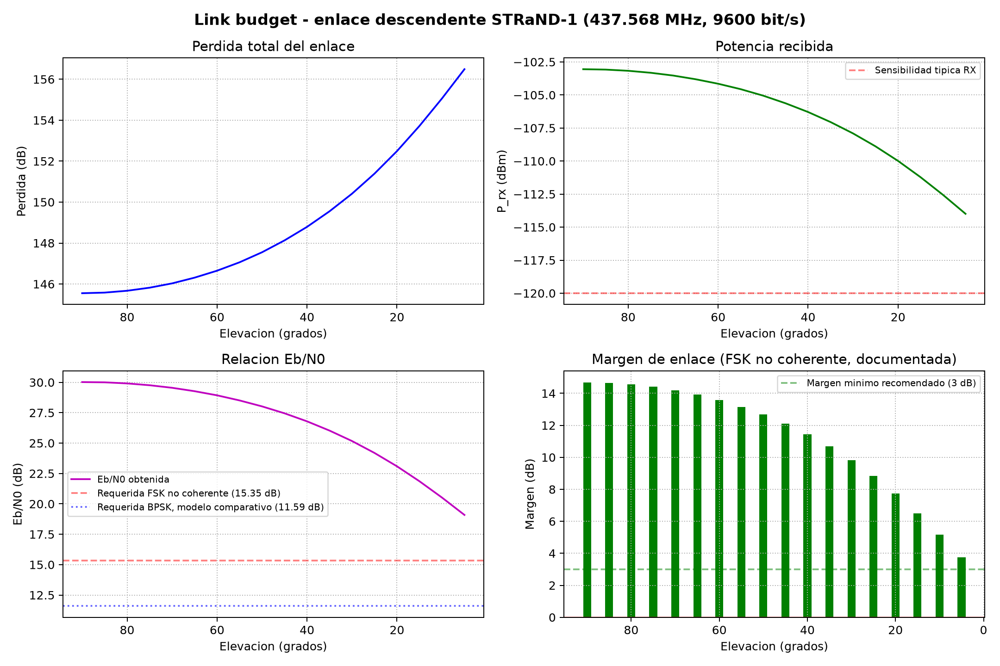
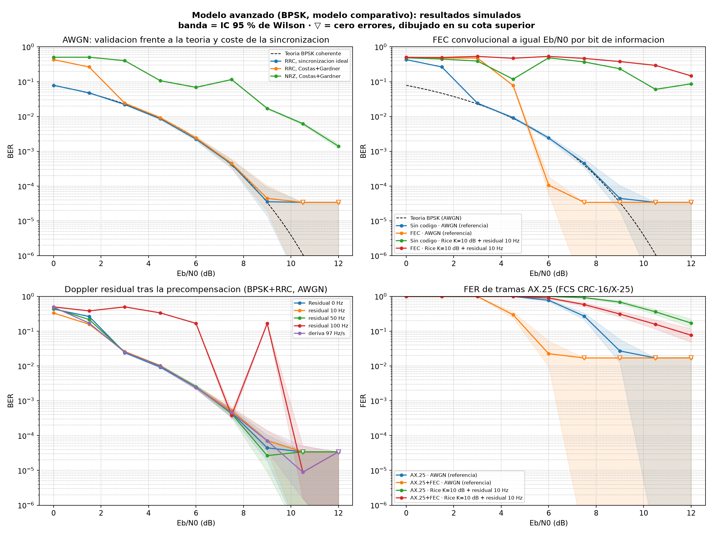
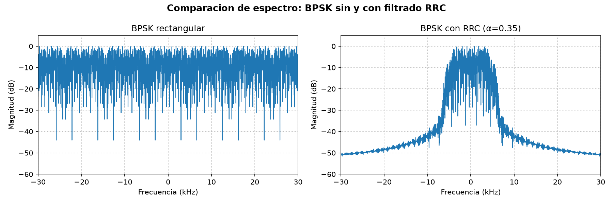
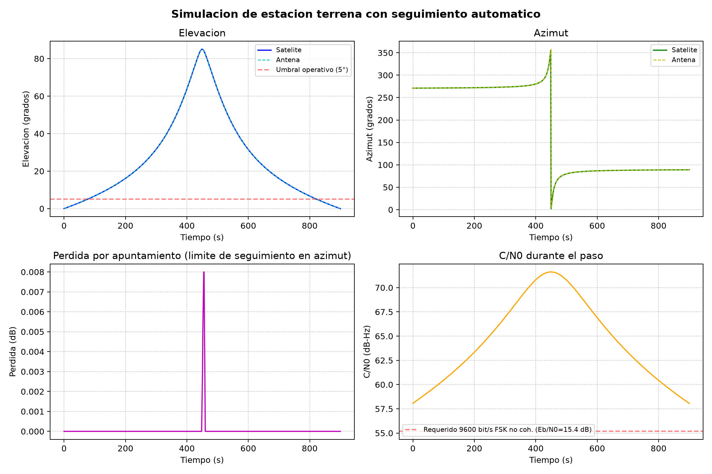
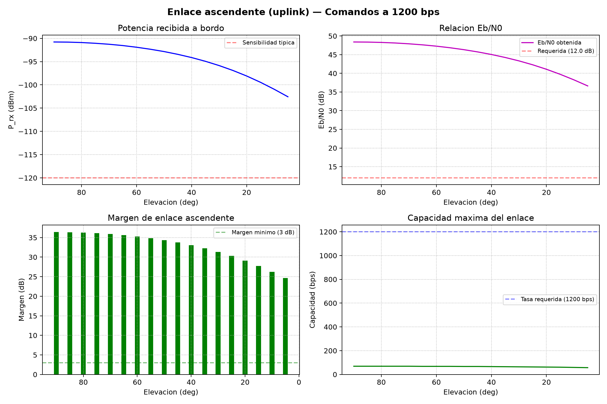

Proyecto completo • revisión de octubre de 2026
Caracterización del subsistema de comunicaciones de un CubeSat
Simulación de señales de radiofrecuencia para el análisis de modulación BPSK/FSK, cálculo de link budget, flujogramas GNU Radio y comparación con CubeSats de referencia, usando telemetría de STRaND-1 como fuente de bits. La baliza real de STRaND-1 es FSK a 9600 bit/s con NRZI; la BPSK es un modelo comparativo. Las cifras de esta página son resultados de modelo, no mediciones del enlace.
Modelo de simulación RF
El modelo implementa una cadena baseband equivalente con datos reales: frames de telemetría → bytes → bits → modulación BPSK/FSK → canal AWGN → demodulación → BER. Se exportan archivos IQ para GNU Radio y resultados numéricos en CSV/JSON.
SatNOGS API
Frames telemetría
Bytes a bits
BPSK / FSK
Canal AWGN
BER + IQ
Hallazgos principales
Modelo comparativo. Sin errores en 18 776 bits desde 2 dB de SNR por muestra (Eb/N0 ≈ 11 dB).
ModeloFamilia de la baliza real (FSK 9600, NRZI). El modelo de banda base no reproduce su modulador.
DocumentadaMargen teórico 3.7–14.7 dB con FSK no coherente (7.5–18.4 dB con BPSK). Depende de parámetros supuestos.
Predicción7 CubeSats de referencia. Frecuencia, tasa y potencia nominal coinciden por construcción; la modulación del satélite es FSK, no la BPSK del modelo. Solo STRaND-1 está verificado en fuente.
6/7 parámetrosFlujogramas GNU Radio
Dos flujogramas diseñados para GNU Radio 3.10 que permiten visualizar y demodular las señales IQ generadas por la simulación Python.
simulacion_visualizar_iq.grc
File Source + AWGN + Time/Freq/Constellation sinks. Control interactivo de ruido.
simulacion_cadena_completa.grc
Cadena BPSK: bytes → unpack → chunks_to_symbols → AWGN → integrate → slicer → sinks.
Los archivos .grc se abren con gnuradio-companion. Requieren GNU Radio 3.10.
Link budget descendente UHF
Cálculo del margen de enlace para STRaND-1 a 437.568 MHz y 9600 bit/s, con una estación terrena hipotética (Yagi de 15 dBi). El umbral se obtiene de la curva teórica de cada esquema a BER 10⁻⁵: margen de 3.7–14.7 dB con FSK no coherente (la modulación documentada) y de 7.5–18.4 dB con BPSK coherente (modelo comparativo), entre 5° y 90° de elevación. En un paso propagado con SGP4 el margen FSK va de 4.8 a 15.8 dB y el Doppler de +9.8 a -9.8 kHz. La mayoría de los parámetros son supuestos de diseño: el informe incluye su procedencia y un análisis de sensibilidad.

Simulación avanzada (RRC + FEC + fading + AX.25)
Modelo BPSK de banda base con filtrado RRC (α=0.35), que reduce el ancho de banda ocupado al 99 % de 66.1 a 11.2 kHz, sincronización con lazos de Costas y Gardner, desvanecimiento Rice (escenario hipotético), Doppler residual, código convolucional (r=1/2, K=7) y tramas AX.25 verificadas con FCS. Comparado a igual Eb/N0 por bit de información, el código gana 1.3 dB a BER 10⁻³ y 3.0 dB en el umbral de FER 10 % de las tramas. Son 15 configuraciones × 9 valores de Eb/N0 × 6 ensayos, todas sobre el mismo canal y las mismas semillas.


Análisis: sensibilidad al Doppler residual
El Doppler orbital del paso analizado con SGP4 alcanza +9.8 kHz y cambia hasta 97 Hz/s. La estación lo pre-compensa con la predicción del TLE, y lo que llega al demodulador es el error de esa predicción: un desfase de 0.5 s deja hasta 48 Hz. El lazo de Costas del modelo absorbe 50 Hz sin pérdida apreciable y empieza a perder el enganche a 100 Hz. Los residuales evaluados son escenarios, no una medida del error real del TLE.
Estación terrena + enlace ascendente
Modelo de estación terrena hipotética en Bogotá con seguimiento automático de antena (Yagi 15 dBi, 5°/s en azimut, 3°/s en elevación) sobre un paso con culminación a 85°. C/N0 entre 59.9 y 71.6 dB-Hz. El error máximo de apuntamiento es 0.77° y la pérdida asociada 0.01 dB. El enlace ascendente es un escenario hipotético (435 MHz, 1200 bit/s, 10 W) con margen de 23.2 a 34.2 dB.

